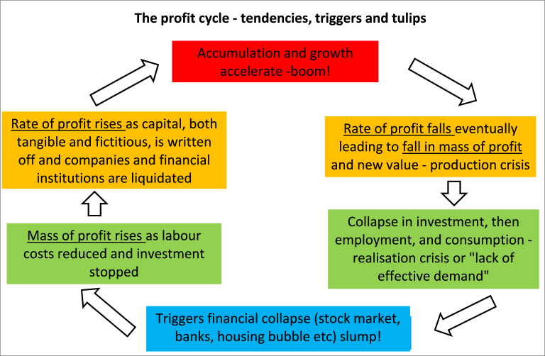
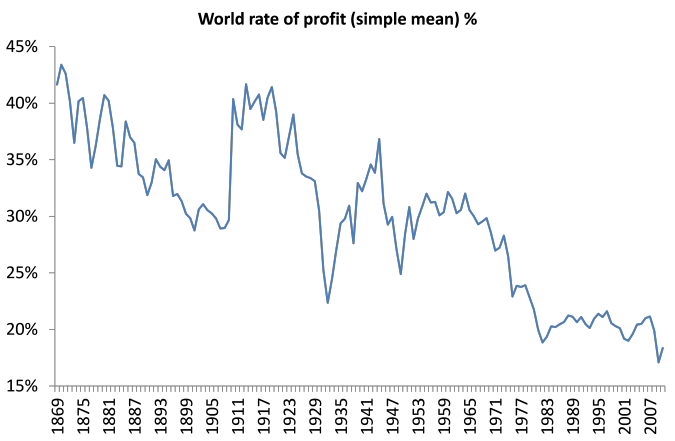

5 Crises
5.1 Crises Theories
Roberts
Marxist scholars and economists as well as activists have found several theories of crises in his works, all of which have got more support than Marx’s law of profitability, actually. There is the view that capitalism goes into slumps because of the lack of demand from workers because their wages are too low to buy the goods that capitalists sell (underconsumption). There is the view that capitalist blindly produce too much relative to potential profits or demand so there is a collapse (overproduction); and there is the view that capitalism accumulates in an imbalanced way so that sectors get out of line, leading to collapse that spreads generally (disproportion). Finally, there is the view that crises come about because profits are squeezed by too high wages (profit squeeze). But I and others who hold to a Marxist theory of crises based on the law of the tendency of the rate of profit to fall reckon that these other theories are a wrong interpretation of Marx’s view on crises and that he also dismissed them. We start from the view that in a profit-making economy, surely crises must be caused by something that goes wrong with profits, not wages, not demand and not imbalances.
Marx’s law is two-sided. There is a tendency – ‘the law as such’ – and then there are countertendencies. But the law holds that these countertendencies will not overcome the law as such (the tendency) ultimately or over time. “They do not abolish the general law. But they cause that law to act rather as a tendency, as a law whose absolute action is checked, retarded and weakened by counteracting circumstances.” – Marx.
The law as such (that the rate of profit in capital accumulation will eventually fall) is based on just two realistic assumptions. The two assumptions are: 1) the law of value operates, namely that value is only created by living labour; and 2) capitalist accumulation leads to a rising organic composition of capital. These two assumptions (or ‘priors’) are not only realistic: they are self-evident. On the first, even a child can see that nothing is produced unless living labour acts. The production of use values is necessary to create value. “Every child knows a nation which ceased to work, I will not say for a year, but even for a few weeks, would perish.” Marx to Kugelmann July 11, 1868.
A rising organic composition of capital under capitalism over time is also self-evident. The huge increase in labour productivity under capitalism is a result of mechanisation. Yes, that can create new jobs, but it is essentially labour-shedding process. And while a new means of production might contain less value that an older similar means of production, usually means of production are replaced by a new and different system of production, which contains more value than the value of the means of production they have replaced. As Marx explains in the Grundrisse: “What becomes cheaper is the individual machine and its component parts, but a system of machinery develops; the tool is not simply replaced by a single machine but by a whole system… Despite the cheapening of individual elements, the price of the whole aggregate increases enormously”. Capital needs higher productivity but gets it through new labour-shedding means of production.
the rate of profit has not fallen (and does not fall) in a straight line. There are counteracting influences to the law as such. They include: a rising rate of exploitation; the cheapening of constant capital values; wages dropping below the value of labour power; foreign trade for higher profitability for national capitals etc. But Marx says these counteracting factors “do not do away with the law but impair its effect. The law acts a tendency. And it is only under certain circumstances and only after long periods that its effects become strikingly pronounced.”
The main countertendency, a rising rate of surplus value, cannot overcome the law as such indefinitely. First, there is a limit to the rate of surplus value (24 hours in a day) and there is no limit to the expansion of the organic composition of capital. Second, there is a ‘social limit’ to a rise in the rate of surplus value, namely labour and society sets a minimum ‘social’ living standard and hours of work etc.
Marx’s law is not only logically consistent, given those realistic assumptions, it can be empirically validated. The empirical questions are: does the rate of profit fall over time as the organic composition of capital rises? Does the rate of profit rise when the organic composition falls or when the rate of surplus value rises faster than the organic composition of capital? Does the rate of profit rise, if there is sharp fall in the organic composition of capital in a slump? There is plenty of empirical evidence to show that the answer is yes to all these questions: for the US economy and, more recently, for the world economy.
The law leads to a clear causal connection to regular and recurrent crises (slumps). It goes from falling profitability to falling profits to falling investment to falling employment and incomes. A bottom is reached when there is sufficient destruction of capital values (writing off plant and equipment, bankruptcy of companies, reduction in wage costs) to raise profits and then profitability. Thus there is a cycle of boom and slump driven by the law of motion of profitability.

Marx’s law of the tendency of the rate of profit to fall makes a fundamental prediction: that, over time, there will be fall in the rate of profit globally, delivering more crises of a devastating character. And great work has been done by modern Marxist analysis that confirms that the world rate of profit has indeed fallen over the last 150 years (http://gesd.free.fr/maito14.pdf). Here is a graph of the work of Esteban Maito on a world rate of profit.

So the law predicts that eventually the rate of profit will fall and this will lead to a series of crises. And, as the organic composition of capital rises globally, the rate of profit will fall, despite counteracting factors and despite successive crises. This shows that capital as a mode of production and social relation is transient. It has not always been here and it has ultimate limits, namely capital itself. It has a use-by date. That is the essence of the law for Marx.
That Marx’s law of profitability provides an underlying causal explanation of regular and recurring crises under capitalism, with predictive power, does not exclude other immediate causes or triggers like banking and financial crises. The role of credit is an important part of crisis theory. The tendency of the rate of profit to fall engenders countertendencies, one of which is to expand credit and switch surplus value into investment in fictitious capital rather than into lower profit productive capital, with disastrous consequences, as the Great Recession shows.
Roberts (2015) The two Michaels (Heinrich and Roberts) in Berlin – dogmatism versus doubt
5.2 Financialization or Profitability
Roberts
What does the term ‘financialisation’ mean and does it add value to our understanding of the contradictions of modern capitalism and guide us to the right policy to change things? I don’t think so. This is because either the term is used so widely that it provides very little extra insight; or it is specified in such a way as to be both theoretically and empirically wrong.
The wide definition mainly quoted by the financialisation school was first offered by Gerald Epstein. Epstein’s definition was “financialization means the increasing role of financial motives, financial markets, financial actors and financial institutions in the operation of the domestic and international economies.” As you can see, this tells us little beyond the obvious that we can see in the development of modern, mature capitalism in the 20th century.
But as Epstein says: “some writers use the term ‘financialization’ to mean the ascendancy of ‘shareholder value’ as a mode of corporate governance; some use it to refer to the growing dominance of capital market financial systems over bank-based financial systems; some follow Hilferding’s lead and use the term ‘financialization’ to refer to the increasing political and economic power of a particular class grouping: the rentier class; for some financialization represents the explosion of financial trading with a myriad of new financial instruments; finally, for Krippner (who first used the term – MR) herself, the term refers to a ‘pattern of accumulation in which profit making occurs increasingly through financial channels rather than through trade and commodity production’”.
The ‘financialisation hypothesis’ reckons that “money capital becomes totally independent from productive capital (as it can directly exploit labour through usury) and it remoulds the other fractions of capital according to its prerogatives.” And if “financial profits are not a subdivision of surplus-value then…the theory of surplus-value is, at least, marginalized. Consequently, profitability (the main differentiae specificae of Marxist economic analysis vis-à-vis Neoclassical and Keynesian Economics) loses its centrality and interest is autonomised from it (i.e. from profit – MR).”
financialisation is really a post-Keynesian theme “based on a theory of classes inherited from Keynes that dichotomises capitalists in two separate classes: industrialists and financiers.” The post-Keynesians are supposedly ‘radical’ followers of Keynes from the tradition of Keynesian-Marxists Joan Robinson and Michel Kalecki, who reject Marx’s theory of value based on the exploitation of labour and the law of the tendency of the rate of profit to fall. Instead, they have a distribution theory: crises are either the result of wages being too low (wage-led) or profits being too low (profit-led). Crises in the neoliberal period since the 1980s are ‘wage-led’. Increased (‘excessive’?) debt was a compensation mechanism to low wages, but only caused and exacerbated a financial crash later. Profitability had nothing to do with it.
As Mavroudeas explains, the hypothesis goes: “The advent of neoliberalism in the 1980s transformed radically capitalism. Liberalisation and particularly financial liberalization led to financialisation (as finance was both deregulated and globalized). This caused a tremendous increase in financial leverage and financial profits but at the expense of growing instability. This resulted in the 2008 crisis, which is a purely financial one.”
Linking debt to the post-Keynesian distribution theory of crises follows from the theories of Hyman Minsky, radical Keynesian economist of the 1980s, that the finance sector is inherently unstable because “the financial system necessary for capitalist vitality and vigor, which translates entrepreneurial animal spirits into effective demand investment, contains the potential for runaway expansion, powered by an investment boom.” The modern follower of Minsky,Steve Keen, puts it thus: “capitalism is inherently flawed, being prone to booms, crises and depressions. This instability, in my view, is due to characteristics that the financial system must possess if it is to be consistent with full-blown capitalism.” Blakeley too follows closely the Minsky-Kalecki analysis and offers it as an improvement on or a modern revision of Marx.
Many in the financialisation school go onto argue that ‘financialisation’ has created a new source of profit (secondary exploitation) that does not come from the exploitation of labour but from gouging money out workers and productive capitalists through financial commissions, fees, and interest charges (‘usury’). I have argued in many posts that this is not Marx’s view.
Post-Keynesian authors and supporters of financialisation like JW Mason refer to the work of mainstream economists like Mian and Siaf to support the idea that modern capitalist crises are the result of rising inequality, excessive household debt leading to financial instability and have nothing to do with the failure of profit ability in productive investment. Mian and Sufi published a book, called the House of Debt, described by the ‘official’ proponent of Keynesian policies, Larry Summers, as the best book this century! In it, the authors argue that “Recessions are not inevitable – they are not mysterious acts of nature that we must accept. Instead recessions are a product of a financial system that fosters too much household debt”.
For me, financialisation is a hypothesis that looks only at the surface phenomena of the financial crash and concludes that the Great Recession was the result of financial recklessness by unregulated banks or a ‘financial panic’. Marx recognised the role of credit and financial speculation. But for him, financial investment was a counteracting factor to the tendency for the rate of profit to fall in capitalist accumulation. Credit is necessary to lubricate the wheels of capitalist commerce, but when the returns from the exploitation of labour begin to drop off, credit turns into debt that cannot be repaid or at serviced. This is what the financialisation school cannot explain: why and when does credit turn into excessive debt?
It was fall in profitability (‘low risk-adjusted returns on productive capital’) in productive investment and the rise in interest costs that led to the switch to what Marx would call investment in fictitious capital. But this does not mean that finance capital is now the decisive factor in crises or slumps. Nor does it mean the Great Recession was just a financial crisis or a ‘Minsky moment’ (to refer to Hyman Minsky’s thesis that crises are a result of ‘financial instability’ alone). Crises always appear as monetary panics or financial collapses, because capitalism is a monetary economy. But that is only a symptom of the underlying cause of crises, namely the failure to make enough money!
Faced with falling profitability in the productive sphere, capital shifts from low profitability in the productive sectors to high profitability in the financial (i.e., unproductive) sectors. But profits in these sectors are fictitious; they exist only on the accounting books. They become real profits only when cashed in. When this happens, the profits available to the productive sectors shrink. The more capitals try to realize higher profit rates by moving to the unproductive sectors, the greater become the difficulties in the productive sectors. This countertendency—capital movement to the financial and speculative sectors and thus higher rates of profit in those sectors—cannot hold back the tendency, that is, the fall in the rate of profit in the productive sectors.
The deterioration of the productive sector in pre-crisis years is thus the common cause of both financial and non-financial crises. If they have a common cause, it is immaterial whether one precedes the other or vice versa. The point is that the (deterioration of the) productive sector determines the (crises in the) financial sector.
It is ironic that these radical followers of Keynes look to the dominance of finance as the new form of (or stage in) capital accumulation because Keynes thought that capitalism would eventually evolve into a leisure society with the ‘euthanasia of the rentier’ ie the financier, would disappear. It was Marx who predicted the rise of finance alongside increasing centralisation and concentration of capital.
The rejection of changes in profits and profitability as the cause of crises in a profit-driven economy can only be ideological. It certainly leads to policy prescriptions that fall well short of replacing the capitalist mode of production. If you think finance capital is the problem and not capitalism, then your solutions will fall short.
The financialisation school needs to remember what one of its icons, Joan Robinson once said: “Any government which had both the power and will to remedy the major defects of the capitalist system would have the will and power to abolish it altogether”.
Roberts (2018) Financialisation or profitability?
Roberts
Despite increasing evidence that Marx’s law of profitability is valid both theoretically and empirically and very relevant to explaining regular and recurring crises under capitalism, this is still denied by many. Indeed, the post-Keynesians thesis of financial crises continues to hold sway among many. The ‘financialisation hypothesis’ is that the cause of modern capitalist crises is to be found in the ‘financialisation’ of what used to be industrial capitalism; and this has caused rising inequality and capitalist crises, not falling profitability or increased exploitation in investment and production.
At IIPPE we had one paper that lent further doubt to this view. Niall Reddy of the University of Witwatersrand, Johannesburg, South Africa argued the evidence dd not show that that non-financial firms were engaged increasingly in financial investment over productive investment. Increases in cash holdings by such firms were more driven by tax advantages and the need to build funds for research. “Neither of these implies a substitution of financial for real investment, which calls into question an important mechanism thought to connect financialisation to secular stagnation and rising nequality.”
I have written extensively on the financialization thesis. But the most devastating refutation of the financialization hypothesis (FH), both theoretically and empirically comes from a new paper not presented at IIPPE, by Stavros Mavroudeas and Turan Subasat.
On the theory, the authors say: “The Marxisant versions of the FH ultimately concur with the mainstreamers and the post-Keynesians that the unproductive-capital dominates productive-capital, and that the former acquires autonomous (from surplus-value) sources of profit. Consequently, they converge to a great extent with the Keynesian theory of classes and consider industrialists and financiers as separate classes. For Keynesian analysis, this is not a problem as it posits that different factors affect savings and investment. However, Marxism conceives interest is part of surplus-value and financial profits depend upon the general rate of profit, Marxism does not elevate the distinctiveness of money-capital and productive-capital to the point of being separate classes. Finally, the Marxisant FH currents have a problematic crisis theory. Instead of a general theory of capitalist crisis, they opt for a conjunctural one… the FH eventually ascribes to a Keynesian possibility theory of the crisis which has well-known shortcomings. In conclusion, the FH variants fail to offer a realistic account of the rise of fictitious-capital activities during the recent period of weak profitability and increased over-accumulation of capital. Marxist theory “does so by realistically keeping the primacy of the production sphere over circulation and also the notion that interest is part of surplus-value extraction.”
And empirically: First, the claim that most of the largest multinational companies are financial is not true. Over the last 30 years the financial sector share in GDP has declined by 51.2% and the financial sector share in services declined by 65.9% of the countries in our study. “Although the rapid expansion in the financial sector observed in some countries before the 2008 crisis suggests that the financial sector may have played an important role in deindustrialization, this situation seems to be cyclical when it comes to a wider time frame.”
Rather than look for crises based on too much debt, financial recklessness or Minsky-type financial instability, Marx’s law of profitability is still the most compelling explanation of crises.
Roberts (2023) IIPPE 2023 Part Two – China, profitability and financialisation